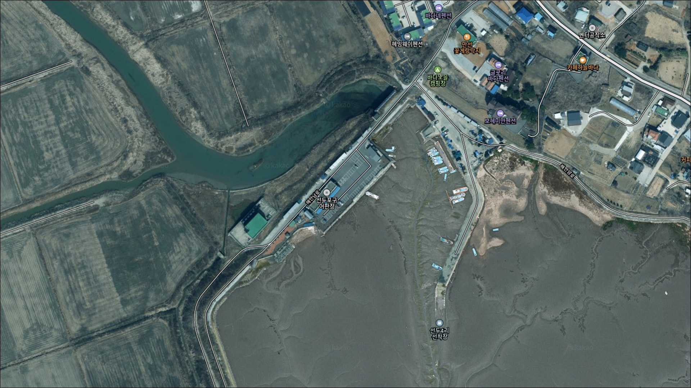
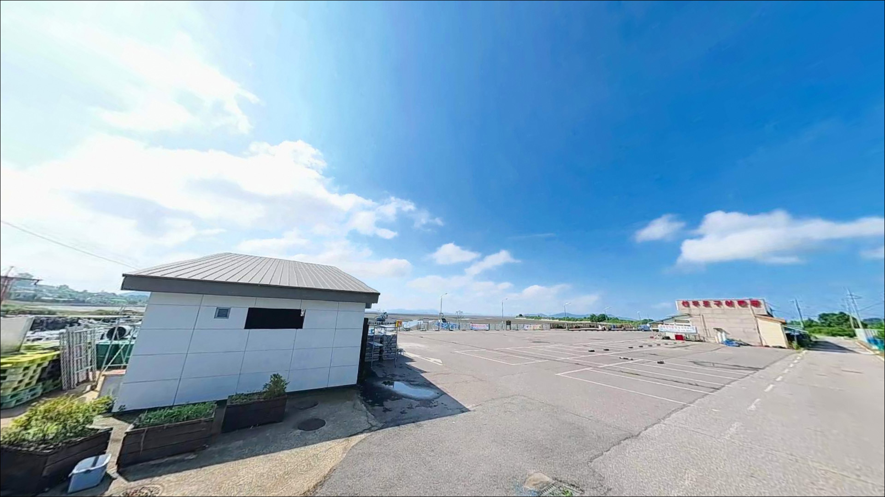
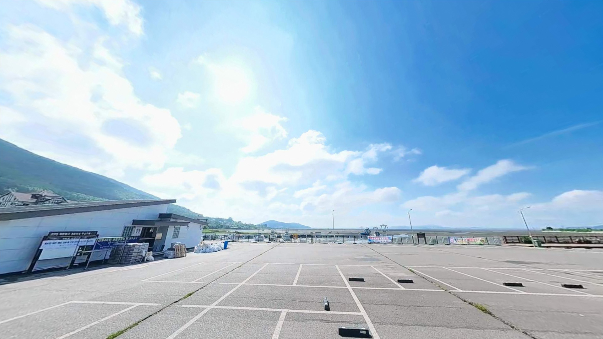
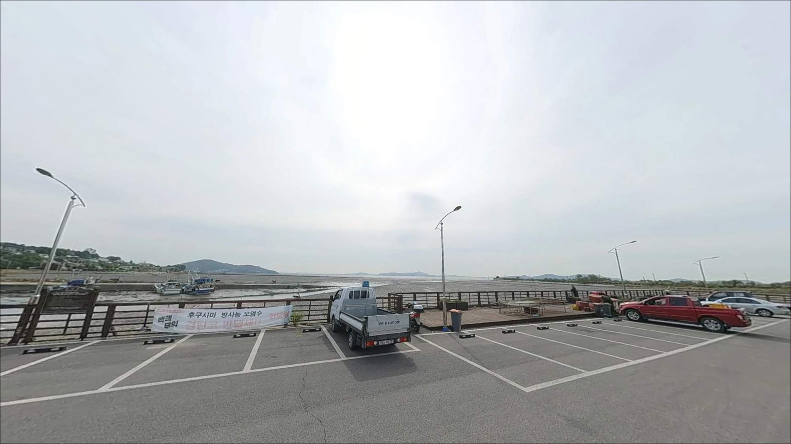
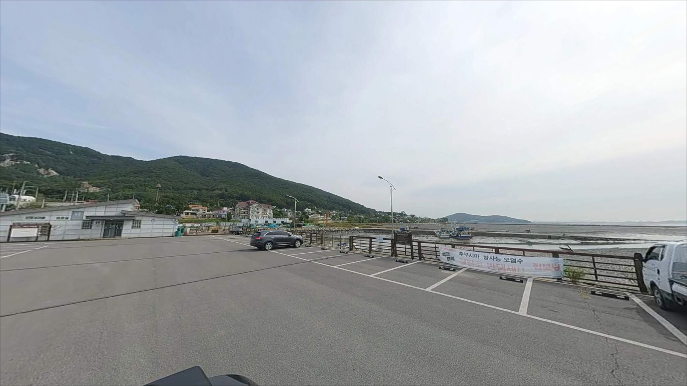
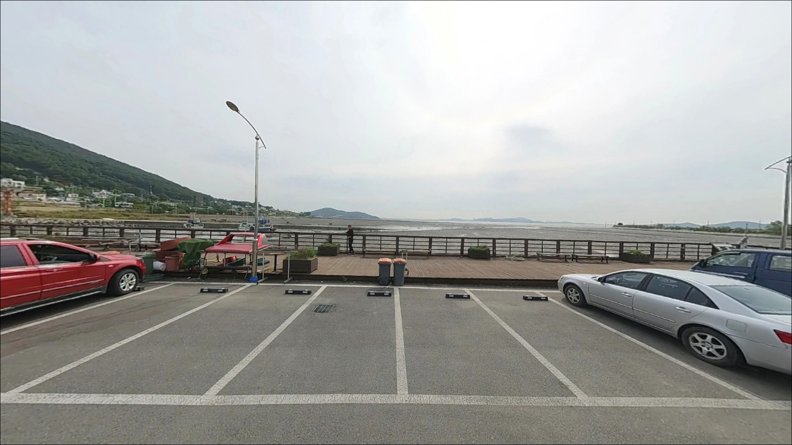
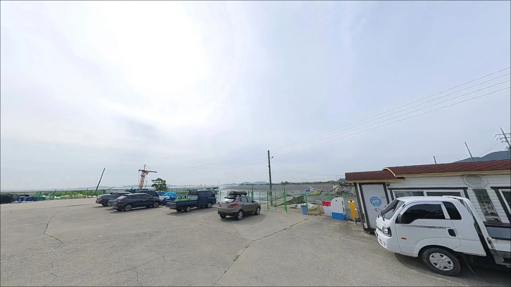
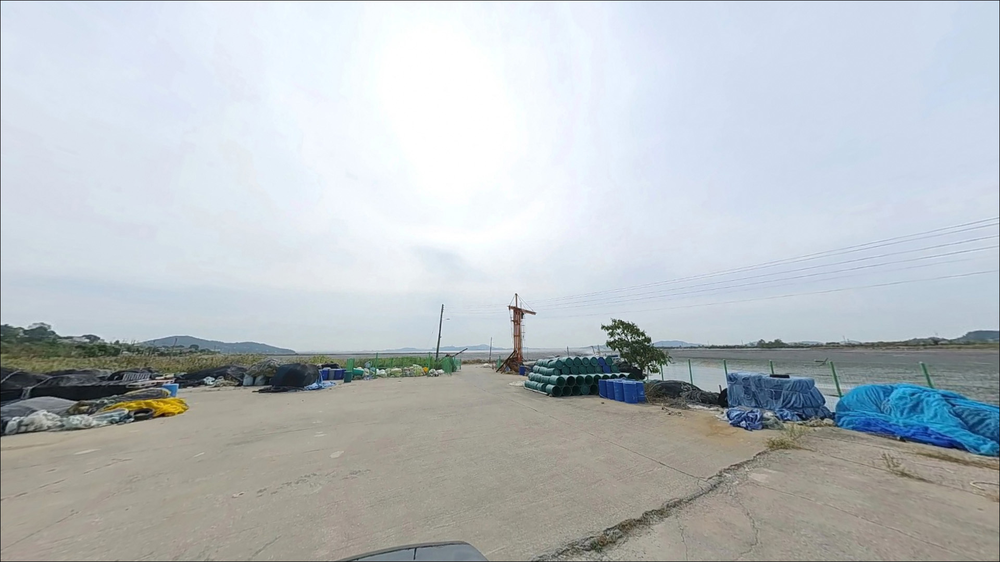

선두포구어판장, 선두4리선착장, 강화도 인천 강화군 노을빛이 스며드는 차박, 낚시 겸용 감성 장소
이 페이지에는 광고(제휴 링크 포함)가 있으며, 광고 링크를 통해 구매하면 운영자가 판매 수익 또는 수수료를 받을 수 있습니다. 포인트 사진: 카카오맵 스카이뷰·로드뷰. 이 페이지의 지도·사진 이미지는 카카오맵의 실제 서비스 이미지와 다를 수 있습니다.


선두포구어판장 · 선두4리선착장
인천 강화군 길상면 선두리 1336-6
선두4리선착장은 물때를 확인하지 않고 찾아가면
낚시 자체가 불가능한 포인트입니다.
강화 남단 갯벌 조간대 특성상
간조 때는 선착장 앞이 갯벌로 완전히 드러나,
아무리 채비를 던져도
수심이 없어 헛걸음이 됩니다.
강화군이 관리하는 공식 포구로,
갯벌과 선착장이 만나는 구조상
들물 타이밍에 조류가 제법 형성되는 편입니다.
숭어·망둥어 계열을 기대해볼 수 있는 서해 어항 포인트이며,
어판장 주차 공간이 넓어
차박을 겸한 당일 출조로 접근하기에
적합한 구조입니다.
이 글은 선두4리선착장의
물때 판단 기준, 진입 여건,
낚시 스타일 적합성에 집중합니다.
조황 단정이나 특정 어종 보장은
이 글의 범위에 포함되지 않습니다.

1. 진입 동선과 포인트 접근성
초지대교를 건너 해안남로를 따라
길상면 방향으로 이동하면
선두리 갯밭마을 일대에 진입할 수 있습니다.
어판장까지 포장도로가 이어지며,
승용차와 일반 SUV 기준으로는
진입 자체에 큰 무리가 없는 편입니다.
어판장 앞 공터형 주차 공간이 넓게 형성되어 있습니다.
다만 어판장 영업 시간대(10:00~20:30)나 주말에는
어선 작업 차량과 관광 방문객이 섞여
주차 여유가 줄어들 수 있습니다.
어선 출입구와 작업 동선을 막지 않는 자리를
우선으로 확보하는 것이 기본 매너입니다.
선착장 끝단으로 이어지는 진입로 폭은
대형 차량 기준으로 다소 좁을 가능성이 있습니다.
처음 방문이라면 출발 전 위성지도로
선착장 진입로 폭과 회차 가능 공간을
미리 확인하는 것이 안전합니다.

2. 차박 환경과 야간 체류 여건
선두4리선착장 일대는 완전한 오지 차박 환경이 아닙니다.
어판장과 마을 상가가 인접해 있어
야간에도 일부 조명과 차량 통행이 있을 가능성이 높으며,
마을가 단기 체류 형태에 가깝습니다.
깊은 야지 차박을 기대하고 방문하면
실망할 수 있는 환경입니다.
서해 갯벌 해안 특성상
야간에는 바람 노출과 체감 온도 저하가
내륙보다 크게 느껴집니다.
어판장 영업 종료 이후에는 주변이 조용해지나,
선착장 끝단 쪽은
개인 조명 장비 없이는 이동이 어렵습니다.
낚시를 마친 뒤 차 안에서 쉬는 형태라면
어판장 주차 공간이 넓어 운용에 무리가 없는 편입니다.
다만 장시간 차박보다는
만조 타이밍에 맞춰 대기하다
짧게 머무는
당일 출조형 차박 운용에 더 어울리는 포인트입니다.


3. 주변 편의시설 및 인프라 현황
선두포구어판장이 현장에서 운영 중이며,
신선한 해산물 구매와 식사가 가능한 공간입니다.
영업 시간은 오전 10시부터 오후 8시 30분까지로
확인됩니다.
낚시 소품이나 간식은 어판장에서
해결하기 어려우니 출발 전에 준비하는 편이 좋습니다.
GS25 강화한옥점이 선두4리선착장에서
1km 안팎 거리에 위치한 것으로 확인됩니다.
차량으로 짧게 이동하면 기본 보급이 가능하나,
심야 운영 여부는 방문 전 확인이 필요합니다.
얼음·낚시 소품·식수·연료는
출발 전 여유 있게 챙기는 것이 기본입니다.
선착장 인근 해안 구간에는
안전 CCTV와 비상벨이 설치된 것이 확인됩니다.
완전한 오지 환경은 아니나,
응급 상황 발생 시 강화 읍내까지 거리가 있으므로
비상약품과 충분한 수분 준비를
기본으로 갖추는 것이 안전합니다.

4. 물때를 모르면 갯벌만 보고 돌아오는 이유
조간대란 만조와 간조를 반복하며
주기적으로 드러났다 잠기는 해안 지형을 말합니다.
선두4리선착장은 이 조간대 갯벌 속으로
길게 뻗어나간 구조입니다.
간조 시에는 광활한 갯벌이 드러나
선착장 앞에서 낚시가 사실상 불가능해지며,
만조 전후 2~3시간이
실질적인 낚시 가능 시간대입니다.
갯벌형 선착장 포인트에서 물때 확인은
출조 성패를 가르는 핵심 조건입니다.
바다타임에서 강화 길상면 기준 물때를
미리 확인하고 출발 시각을 역산해 맞추는 것이
이 포인트를 제대로 활용하는 방법입니다.
사리 전후에는 조류가 강해지는 경향이 있어
채비 컨트롤이 어려울 수 있으며,
조금 전후 들물·날물 전환 타이밍이
상대적으로 안정적인 낚시 조건을 만들어 줍니다.
갯벌 해안 특성상 만조에서 썰물로 전환되면
진입했던 자리 여건이 달라질 수 있습니다.
입장 전 철수 동선을 먼저 확인하는 습관이
이 포인트에서 특히 중요하며,
선착장 끝단 접근 시에는
구명조끼 착용과 미끄럼 주의가 필수입니다.

5. 지형 기반 낚시 여건 분석
선두4리선착장은 강화도 남단에서
갯벌 한복판으로 길게 뻗어나간 구조입니다.
만조 시 선착장 끝단에서 수심이 확보되는 편이며,
물길이 모이는 구간에서는
조류 흐름이 살아있는 편입니다.
외해 노출도가 낮은 내만형으로
파도와 너울 영향은 적습니다.
바닥은 갯벌과 모래가 혼합된 조간대 성격을 보입니다.
테트라포드나 대형 방파제 구조물은 없으며,
선착장 끝자락과 갯골 물길이 형성되는 구간이
포인트가 될 가능성이 높은 편입니다.
수심이 들물 전후로 급변하는 구조이므로
만조 타이밍에 맞춘 입장이 기본 전제입니다.
어판장 방문객 후기에서 숭어·망둥어·게 계열이
언급된 사례가 있으며,
인근 선두리 일대 수로 구간에서도
낚시 활동 사례가 간간이 검색됩니다.
이는 개인 경험 수준의 참고 정보이며,
특정 어종을 단정하기 어렵습니다.
서해 조간대 어항 특성상 봄~가을에 걸쳐
숭어·망둥어 계열을 기대해볼 수 있으나,
최신 조황은 가기 전에 반드시 검색해 보시기 바랍니다.


6. 포인트에 어울리는 낚시 스타일
이 포인트 지형 조건에서 가장 잘 맞는 낚시는
원투낚시입니다.
원투낚시란 무거운 봉돌을 달아 멀리 캐스팅한 뒤
바닥 어종의 입질을 기다리는 낚시 방식입니다.
갯벌·모래 혼합 바닥과 선착장 끝단 수심 구조상
만조 전후에 채비를 멀리 던져
갯골 바닥을 탐색하는 방식이 어울립니다.
찌낚시도 이 포인트에 맞는 방식입니다.
만조 전후 선착장 끝단에서 수심이 충분히 확보되는 타이밍에
가벼운 채비로 표층~중층을 노리는 방식으로,
조류가 형성되는 물길 방향으로
찌를 천천히 흘려주는 접근이
숭어 계열을 기대할 때 기본 스타일입니다.
지그헤드 채비를 활용한 가벼운 루어 탐색도
들물 때 시도해볼 수 있습니다.
조류가 형성되는 구간에서 천천히 끌어오는 방식으로,
망둥어·농어 계열을 기대하는 경우
선착장 주변 물길을 탐색하는 방식입니다.
갯벌 바닥 비중이 높은 구조상
밑걸림에 유의해야 합니다.

7. 대안 포인트와 플랜 B 동선
선두4리선착장의 물때가 맞지 않거나
주차 공간이 여의치 않을 때
첫 번째로 검토할 대안은 초지항입니다.
같은 길상면 해안선에 위치해 이동 거리가 짧고,
원투낚시 망둥어 관련 방문 기록이
상대적으로 많이 검색되는 곳입니다.
초지항은 주차 여건이 선두4리선착장보다
여유로운 편이며,
초지진 인근에서 화장실도 확인된 바 있어
장시간 체류 시 편의 면에서도
초지항이 더 유리한 조건을 갖추고 있습니다.
같은 해안선 특성상 물때 패턴이 유사해
현장 판단을 그대로 이어갈 수 있습니다.
유료 낚시 시설을 원한다면
선두바다낚시터(길상면 해안남로 673-15)가
선두4리선착장 인근에 위치합니다.
방갈로 형태의 시설이 갖춰진 곳으로,
자연 선착장 여건이 맞지 않을 때
안정적인 대체 낚시 환경으로
활용할 수 있습니다.

물때를 맞추면
선두포구가 달리 보입니다
원투낚시나 찌낚시를 즐기는 낚시인이라면
선두4리선착장은 지형 조건 자체가 나쁘지 않은 곳입니다.
복잡한 채비 없이 만조 타이밍에 맞춰 진입하면
갯벌 속 물길에서 숭어·망둥어 계열을
기대해볼 수 있습니다.
반면 물때 계산 없이 찾아가거나
간조 무렵 도착하면
낚시 자체가 불가능한 상황이 됩니다.
바다타임으로 만조 시각을 미리 잡고,
GS25 등 주변 편의점을 통해
사전 준비를 갖추고 출발하는 것이
이 포인트 방문의 기본 조건입니다.
수도권에서 초지대교를 건너 한 시간 내외로 닿을 수 있고,
어판장 신선 해산물을 곁에 두고
만조 들물에 채비를 던지다
차 안에서 잠깐 눈을 붙이는 출조라면,
강화 선두포구는 준비가 갖춰진 낚시인에게
충분히 기억에 남는 포인트가 될 수 있는 곳입니다.